풋살 팀 밸런서
사용자 설명서 · 로컬 PC 버전
버전 1.0 · 2026년 10월
제작자 : modoismodo
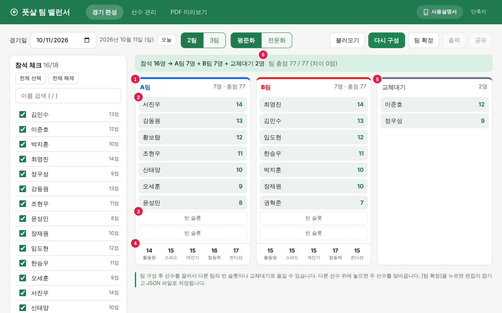
목차
- 소개
- 설치와 실행
- 화면 구성
- 빠른 시작 — 처음 사용할 때 순서
- 선수 관리 — 등록, 능력치, 이름 수정, 삭제, 검색, 명단 옮기기
- 경기 날짜와 참석 체크
- 팀 수와 인원 규칙
- 팀 구성 — 평준화와 전문화
- 선수 옮기기 — 드래그 앤 드롭
- 팀 확정과 수정
- 불러오기
- PDF 출력
- 공유 이미지 — 카카오톡으로 보내기
- 키보드 단축키
- 데이터 보관과 백업
- 자주 묻는 질문과 문제 해결
- 부록 — 파일 목록, 편성 규칙 요약, 제작자와 버전 정보
1소개
풋살 팀 밸런서는 풋살 경기 전에 참석한 선수들의 능력치를 바탕으로 팀을 자동으로 나눠 주는 프로그램입니다.
- 팀을 고르게 나눕니다. 선수마다 매긴 5가지 능력치를 보고, 팀끼리 실력이 비슷하도록(평준화) 또는 실력 순서대로(전문화) 2팀이나 3팀을 만듭니다.
- 사람이 직접 고칠 수 있습니다. 자동으로 나눈 결과를 마우스로 끌어서 선수를 옮기거나 맞바꿀 수 있습니다.
- 결과를 남기고 나눕니다. 확정한 편성표를 파일로 저장하고, A4 PDF로 인쇄하고, 카카오톡에 붙여 넣을 수 있는 이미지로 공유합니다.
이 버전의 특징
| 항목 | 내용 |
|---|---|
| 설치 | 필요 없습니다. 폴더 안의 index.html을 더블클릭하면 바로 실행됩니다. |
| 서버, DB, 인터넷 | 필요 없습니다. 모든 기능이 PC 안에서만 동작하며, 인터넷이 끊겨도 쓸 수 있습니다. |
| 데이터 저장 | 선수 명단과 날짜별 편성은 브라우저 안에 자동 저장됩니다. 확정한 편성표는 파일(JSON)로 저장됩니다. |
| 권장 환경 | Windows PC + Chrome 또는 Microsoft Edge 최신 버전, 화면 너비 1280픽셀 이상 |
2설치와 실행
2-1. 프로그램 폴더 준비
- 전달받은
footsalteam_web.zip파일을 PC에 저장합니다. - 파일을 마우스 오른쪽 버튼으로 누르고 압축 풀기 또는 모두 압축 풀기를 누릅니다.
- 압축을 푼
footsalteam_web폴더를 오래 둘 곳으로 옮깁니다. 예:C:\futsal\footsalteam_web
index.html, manual.html, css, js, manual 폴더가 한곳에 함께 있어야 합니다. index.html 파일만 따로 복사하면 화면이 깨지거나 동작하지 않습니다.2-2. 실행
footsalteam_web폴더를 열고index.html을 더블클릭합니다.- Chrome 또는 Edge에서 프로그램이 열립니다. 주소창에는
file:///C:/futsal/footsalteam_web/index.html처럼 표시됩니다. - 다른 프로그램(메모장 등)으로 열리면,
index.html을 마우스 오른쪽 버튼으로 누르고 연결 프로그램 → Google Chrome 또는 Microsoft Edge를 고릅니다.
index.html을 마우스 오른쪽 버튼으로 누르고 바로 가기 만들기로 바탕화면에 바로가기를 두면 편합니다.2-3. 새 버전으로 바꾸기
새 버전을 받으면 기존 footsalteam_web 폴더에 그대로 덮어쓰면 됩니다. 선수 명단은 폴더가 아니라 브라우저에 저장되어 있으므로 지워지지 않습니다. 그래도 바꾸기 전에 명단 내보내기로 백업해 두기를 권합니다.
3화면 구성
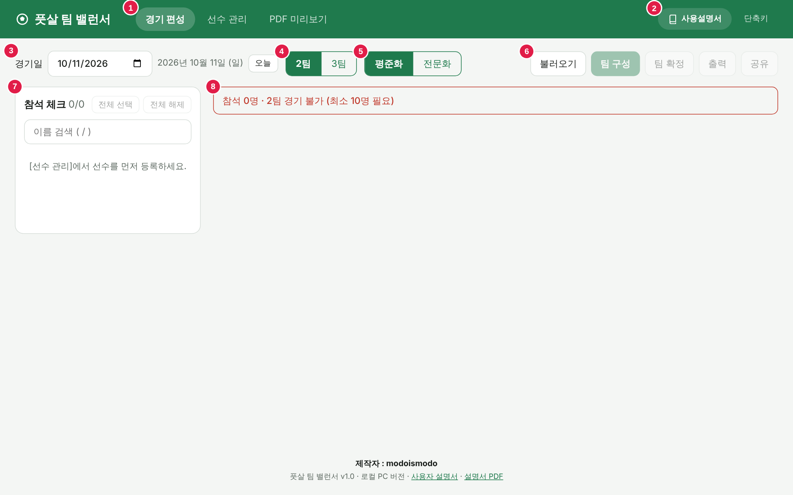
| 번호 | 이름 | 설명 |
|---|---|---|
| 1 | 탭 | 경기 편성(팀 나누기), 선수 관리(명단과 능력치), PDF 미리보기(출력물 확인) 화면을 오갑니다. |
| 2 | 사용설명서 / 단축키 | 사용설명서를 누르면 이 설명서가 새 탭으로 열립니다(F1). 단축키는 키보드 단축키 목록을 보여 줍니다. 화면 맨 아래에는 제작자 정보와 함께 설명서, 설명서 PDF 링크가 있습니다. |
| 3 | 경기일 | 경기 날짜를 고릅니다. 날짜마다 참석 체크와 편성이 따로 보관됩니다. |
| 4 | 팀 수 | 2팀 또는 3팀을 고릅니다. |
| 5 | 편성 방식 | 평준화(실력을 고르게) 또는 전문화(실력 순서대로)를 고릅니다. |
| 6 | 작업 버튼 | 불러오기 팀 구성 팀 확정 출력 공유. 지금 쓸 수 없는 버튼은 흐리게 표시됩니다. |
| 7 | 참석 체크 | 오늘 참석하는 선수를 체크합니다. 이름 옆 숫자는 선수 점수(능력치 합계)입니다. |
| 8 | 상태 안내 | 참석 인원과 예상 팀 구성을 보여 줍니다. 인원이 모자라면 빨간 글씨로 "경기 불가"를 표시합니다. |
화면에 나타나는 짧은 알림(예: "선수를 추가했습니다")은 화면 아래 가운데에 잠시 표시되었다가 사라집니다.
Windows를 다크 모드로 설정하면 프로그램도 자동으로 어두운 화면으로 바뀝니다. 창 너비를 좁히면(900픽셀 이하) 참석 체크가 위, 팀 카드가 아래로 배치됩니다.
4빠른 시작
처음 사용할 때는 아래 순서대로 진행하세요. 두 번째 경기부터는 2번부터 시작하면 됩니다.
- 선수 등록: 선수 관리 탭에서 이름을 입력하고 Enter. 등록한 선수의 능력치 버튼(1·2·3)을 눌러 실력을 매깁니다. (5장)
- 참석 체크: 경기 편성 탭에서 경기일을 확인하고, 참석하는 선수를 체크합니다. (6장)
- 팀 구성: 2팀/3팀, 평준화/전문화를 고르고 팀 구성을 누릅니다. 마음에 들 때까지 다시 구성을 눌러도 됩니다. (8장)
- 조정: 같이 뛰어야 하는 사람, 떨어져야 하는 사람이 있으면 선수 이름을 끌어서 옮깁니다. (9장)
- 팀 확정: 팀 확정을 누르면 편성표 파일이 저장되고 편집이 잠깁니다. (10장)
- 출력·공유: 출력으로 PDF를 받거나, 공유로 팀 명단 이미지를 카카오톡에 붙여 넣습니다. (12장, 13장)
5선수 관리
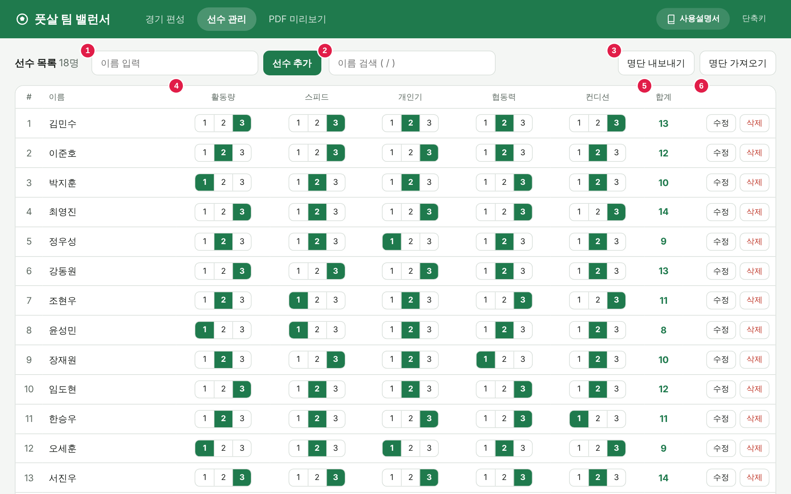
| 번호 | 이름 | 설명 |
|---|---|---|
| 1 | 이름 입력, 선수 추가 | 새 선수를 등록합니다. |
| 2 | 이름 검색 | 글자를 입력하면 이름에 그 글자가 들어간 선수만 보입니다. |
| 3 | 명단 내보내기 / 가져오기 | 명단을 파일로 백업하거나 다른 PC로 옮깁니다. |
| 4 | 능력치 | 5개 항목마다 1·2·3 중 하나를 누릅니다. 초록색이 현재 값입니다. |
| 5 | 합계 | 5개 능력치를 더한 선수 점수(5~15점)입니다. |
| 6 | 수정 / 삭제 | 이름을 바꾸거나 선수를 지웁니다. |
5-1. 선수 등록
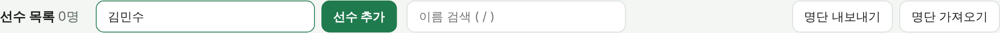
- 선수 관리 탭(Alt+2)을 엽니다.
- 이름 입력 칸에 이름을 쓰고 Enter를 누르거나 선수 추가를 누릅니다.
- 목록 맨 아래에 선수가 추가됩니다. 새 선수의 능력치는 모두 2(보통), 합계는 10점입니다.
- 입력 칸에 커서가 그대로 있으므로 이어서 다음 이름을 입력하면 됩니다.
- 같은 이름은 등록할 수 없습니다. "이미 같은 이름의 선수가 있습니다"라는 알림이 나옵니다. 동명이인은 "김민수A", "김민수(87)"처럼 구분해서 등록하세요.
- 이름은 20자까지 입력할 수 있고, 빈칸만 입력하면 등록되지 않습니다.
5-2. 능력치 매기기
능력치 5개 항목은 각각 1(낮음) · 2(보통) · 3(높음) 세 단계입니다. 숫자 버튼을 누르면 바로 바뀌고 자동 저장됩니다. 저장 버튼은 따로 없습니다.
| 항목 | 뜻 | 매기는 예 |
|---|---|---|
| 활동량 | 경기 내내 얼마나 많이 뛰는가 | 쉬지 않고 뛰면 3, 자주 쉬면 1 |
| 스피드 | 달리기와 순간 움직임이 얼마나 빠른가 | 팀에서 가장 빠른 편이면 3 |
| 개인기 | 드리블, 볼 터치, 슈팅 등 공 다루는 기술 | 혼자 수비를 제칠 수 있으면 3 |
| 협동력 | 패스, 위치 선정, 수비 가담 등 팀플레이 | 패스를 잘 돌리고 수비도 하면 3 |
| 컨디션 | 요즘 몸 상태와 경기 감각 | 부상 회복 중이면 1, 최근 꾸준히 뛰면 3 |
- 처음에는 모두 2로 두고, 확실히 잘하거나 부족한 항목만 3이나 1로 바꾸세요.
- 컨디션은 경기 전에 바꿔 주면 좋습니다. 부상, 장기 결석 같은 사정을 반영할 수 있습니다.
- 선수 점수(합계)는 경기 편성 화면의 참석 체크와 팀 카드에도 표시됩니다.
5-3. 이름 수정
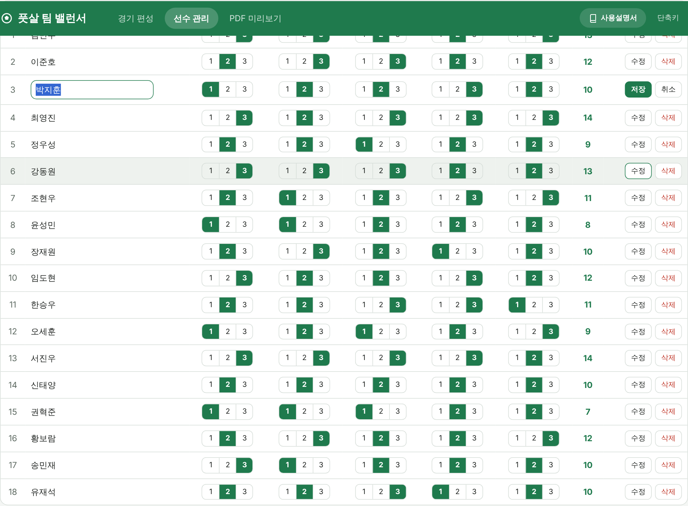
- 바꿀 선수 줄의 수정을 누르거나, 이름을 더블클릭합니다.
- 이름 칸이 입력 칸으로 바뀌면 새 이름을 입력합니다.
- Enter 또는 저장을 누르면 저장됩니다. Esc 또는 취소를 누르면 원래 이름으로 돌아갑니다.
다른 선수와 같은 이름으로는 바꿀 수 없습니다. 이미 확정한 편성표에는 확정할 때의 이름이 그대로 남습니다.
5-4. 선수 삭제
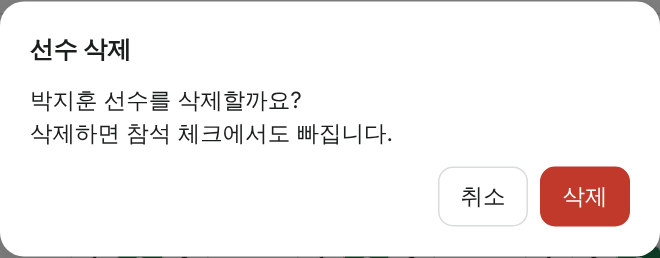
- 지울 선수 줄의 삭제를 누릅니다.
- 확인 창에서 빨간 삭제를 누릅니다. 그만두려면 취소 또는 Esc.
5-5. 이름 검색
이름 검색 칸에 글자를 입력하면 그 글자가 들어간 선수만 표시됩니다. 예를 들어 "민"을 입력하면 김민수, 송민재, 윤성민이 보입니다. 검색 칸을 비우면 전체가 다시 보입니다. 다른 곳에 커서가 없을 때 /를 누르면 검색 칸으로 바로 이동합니다.
5-6. 명단 내보내기 / 가져오기
선수 명단을 파일로 저장해 두었다가 다시 불러오는 기능입니다. 백업과 다른 PC나 다른 브라우저로 옮기기에 씁니다.
내보내기
명단 내보내기를 누르면 futsal_players_날짜.json 파일이 PC의 다운로드 폴더에 저장됩니다. 이 파일에는 모든 선수의 이름과 능력치가 들어 있습니다.
가져오기
- 명단 가져오기를 누르고, 내보내기로 저장한 파일을 고릅니다.
- "추가 n명, 갱신 n명" 알림이 나오고 목록에 반영됩니다.
| 파일 속 선수가 | 처리 |
|---|---|
| 지금 명단에 없는 새 선수 | 명단에 추가 |
| 지금 명단에 있는 같은 선수(같은 파일에서 나온 선수) | 이름과 능력치를 파일 내용으로 갱신 |
| 다른 선수인데 이름만 같음 | 건너뜀 (기존 선수를 그대로 둠) |
6경기 날짜와 참석 체크
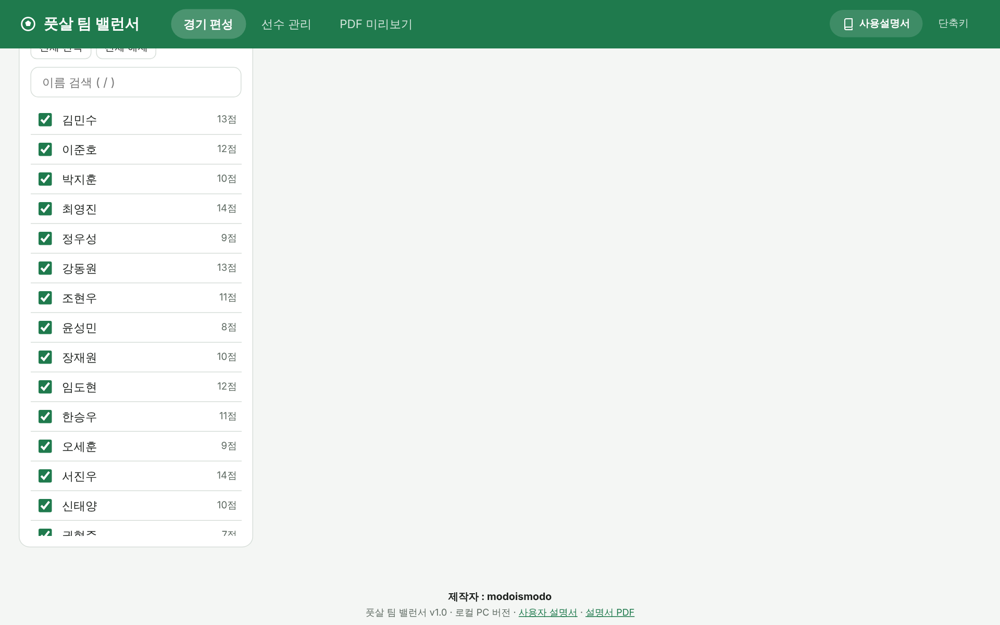
6-1. 경기일 고르기
- 프로그램을 열면 오늘 날짜가 선택되어 있습니다. 옆에 "2026년 10월 11일 (일)"처럼 요일이 함께 표시됩니다.
- 날짜 칸을 누르면 달력이 열립니다. 날짜를 고르면 그 날짜의 화면으로 바뀝니다.
- 오늘을 누르면 오늘 날짜로 돌아옵니다.
- 키보드 [는 하루 전, ]는 하루 뒤로 이동합니다.
날짜 칸의 표시 형식(예: 2026. 10. 11. 또는 10/11/2026)은 PC와 브라우저의 언어 설정에 따라 다를 수 있습니다. 옆에 표시되는 한글 날짜를 기준으로 확인하세요.
6-2. 참석 체크
- 선수 이름이나 체크 상자를 누르면 체크/해제됩니다.
- 전체 선택은 모든 선수를, 전체 해제는 아무도 체크하지 않은 상태로 만듭니다. 대부분 참석하는 날에는 전체 선택 후 빠진 사람만 해제하면 빠릅니다.
- "참석 체크 16/18"은 전체 18명 중 16명이 체크되었다는 뜻입니다.
- 선수가 많으면 이름 검색 칸(/)으로 찾아서 체크하세요.
- 상단 상태 안내에 "참석 16명 → A팀 7명 + B팀 7명 + 교체대기 2명"처럼 예상 구성이 바로 표시됩니다.
7팀 수와 인원 규칙
툴바의 2팀 3팀 중에서 고릅니다. 팀 인원은 다음 규칙으로 자동으로 정해집니다.
- 한 팀은 5명 이상 7명 이하입니다.
- 참석 인원을 팀끼리 최대 1명 차이로 고르게 나눕니다. 1명 많은 팀은 A팀부터입니다.
- 팀에 다 들어가지 못하는 인원(팀 수 × 7명 초과)은 교체대기가 됩니다. 교체대기는 무작위로 뽑습니다.
- 인원이 모자라면(2팀은 10명 미만, 3팀은 15명 미만) 경기 불가로 표시되고 팀 구성을 누를 수 없습니다.
| 참석 | 2팀 선택 | 3팀 선택 |
|---|---|---|
| 9명 이하 | 경기 불가 | 경기 불가 |
| 10 | A5 + B5 | 경기 불가 |
| 11 | A6 + B5 | 경기 불가 |
| 12 | A6 + B6 | 경기 불가 |
| 13 | A7 + B6 | 경기 불가 |
| 14 | A7 + B7 | 경기 불가 |
| 15 | A7 + B7 + 대기 1 | A5 + B5 + C5 |
| 16 | A7 + B7 + 대기 2 | A6 + B5 + C5 |
| 18 | A7 + B7 + 대기 4 | A6 + B6 + C6 |
| 20 | A7 + B7 + 대기 6 | A7 + B7 + C6 |
| 21 | A7 + B7 + 대기 7 | A7 + B7 + C7 |
| 23 | A7 + B7 + 대기 9 | A7 + B7 + C7 + 대기 2 |
팀 이름은 A팀(파랑), B팀(빨강), C팀(주황)이고 교체대기는 회색입니다. 팀을 구성한 뒤 팀 수를 바꾸면 팀 카드가 지워지므로 팀 구성을 다시 누르세요.
8팀 구성 (평준화 / 전문화)
8-1. 편성 방식
| 방식 | 나누는 방법 | 이럴 때 |
|---|---|---|
| 평준화 | 점수가 높은 선수부터 A→B→B→A(3팀은 A→B→C→C→B→A) 순서로 번갈아 넣은 뒤, 팀 사이에서 선수를 맞바꿔 가며 팀 총점과 항목별 능력치가 가장 비슷해지는 조합을 찾습니다. | 평소 친선 경기. 어느 팀이 이길지 모르는 접전을 원할 때 |
| 전문화 | 점수가 높은 선수부터 A팀을 채우고, 그다음 선수들로 B팀, 그다음 C팀을 채웁니다. | 실력이 비슷한 사람끼리 뛰게 하고 싶을 때 (수준별 경기) |
두 방식 모두 교체대기를 먼저 무작위로 뽑은 다음 나머지 선수로 팀을 나눕니다. 점수가 같은 선수끼리의 순서도 매번 무작위로 섞습니다.
8-2. 팀 구성하기
- 팀 수(2팀/3팀)와 방식(평준화/전문화)을 고릅니다.
- 팀 구성을 누릅니다 (Ctrl+Enter).
- 팀 카드가 나타나고, 버튼 이름이 다시 구성으로 바뀝니다.
- 결과가 마음에 들지 않으면 다시 구성을 누를 때마다 새 조합이 나옵니다. 교체대기 선수도 다시 뽑힙니다.
팀을 구성한 상태에서 편성 방식을 바꾸면 바뀐 방식으로 즉시 다시 구성됩니다.
8-3. 팀 카드 읽는 법
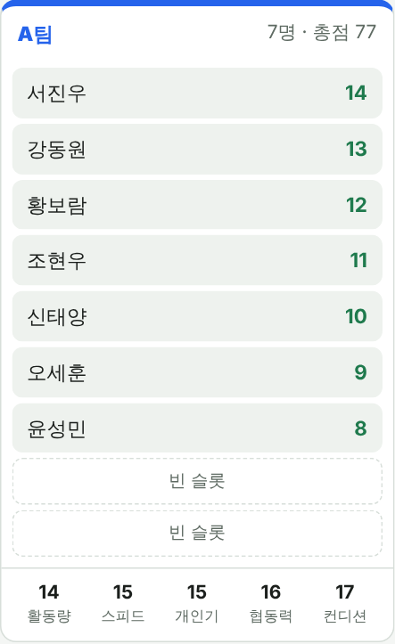
| 번호 | 설명 (그림 8-1 기준) |
|---|---|
| 1 | 팀 이름(팀 색), 인원, 팀 총점(선수 점수의 합) |
| 2 | 선수 이름과 선수 점수. 이름 위에 마우스를 올려 두면 5개 능력치가 작은 글씨로 나타납니다. |
| 3 | 빈 슬롯. 다른 팀 선수를 끌어다 놓을 수 있는 자리입니다. 팀마다 처음에 2개씩 있습니다. |
| 4 | 항목별 합계. 팀 선수들의 활동량, 스피드, 개인기, 협동력, 컨디션을 각각 더한 값입니다. |
| 5 | 교체대기 카드. 팀에 들어가지 못한 선수들입니다. 교체대기가 없어도 카드는 보이며, 선수를 여기로 옮길 수 있습니다. |
| 6 | 팀 총점 비교. "팀 총점 77 / 77 (차이 0점)"처럼 팀끼리 얼마나 비슷한지 보여 줍니다. |
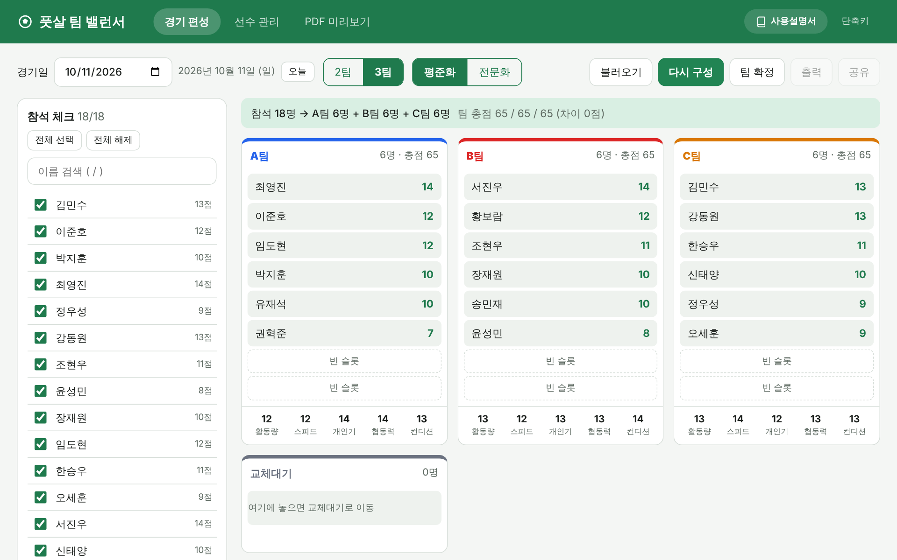
9선수 옮기기 (드래그)
팀을 구성한 뒤, 확정하기 전까지는 선수를 마우스로 끌어서 옮길 수 있습니다. 선수 이름을 누른 채로 끌고 가서 원하는 곳에 놓으면 됩니다. 끌고 있는 동안 놓을 카드는 팀 색 테두리로, 맞바꿀 선수는 테두리로 강조됩니다.
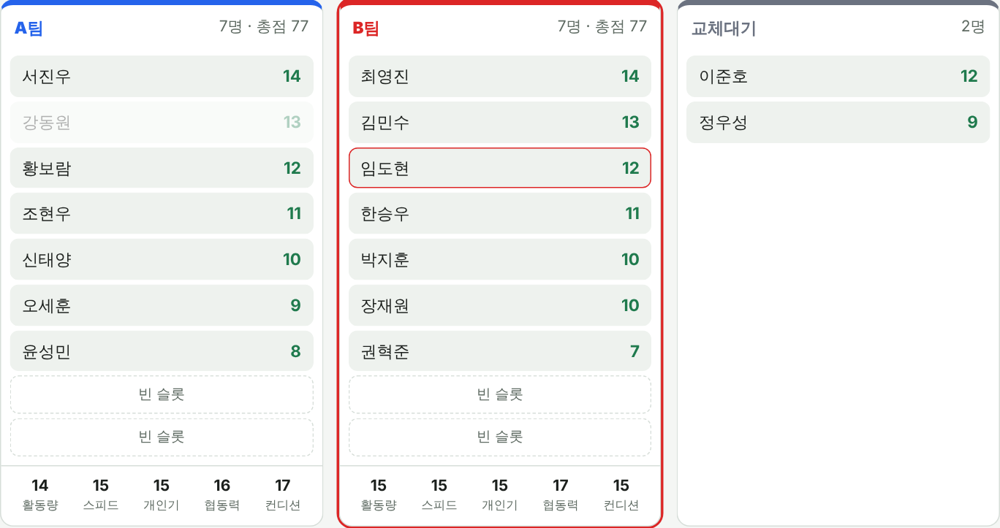
| 놓는 곳 | 결과 |
|---|---|
| 다른 팀의 빈 슬롯 (또는 카드의 빈 곳) | 선수가 그 팀으로 이동합니다. 원래 팀에는 빈 슬롯이 하나 늘고, 옮긴 팀은 하나 줄어듭니다. |
| 다른 선수 위 | 두 선수가 서로 맞바뀝니다. 같은 팀 안에서 하면 순서만 바뀝니다. |
| 교체대기 카드 | 선수가 교체대기로 이동합니다. 교체대기는 인원 제한이 없습니다. |
| 교체대기 선수를 팀 선수 위에 | 교체대기 선수가 팀에 들어가고, 그 팀 선수가 교체대기로 갑니다. |
합계, 총점, 인원은 옮길 때마다 바로 다시 계산됩니다.
9-1. 빈 슬롯이 없을 때
빈 슬롯이 0개인 팀의 빈 곳에 놓으면 "빈 슬롯이 없습니다. 선수 위에 놓아 맞바꾸세요."라는 알림이 나오고 옮겨지지 않습니다. 이때는 그 팀 선수 위에 놓아 맞바꾸거나, 그 팀 선수를 먼저 다른 곳으로 옮기세요.
9-2. 인원 경고
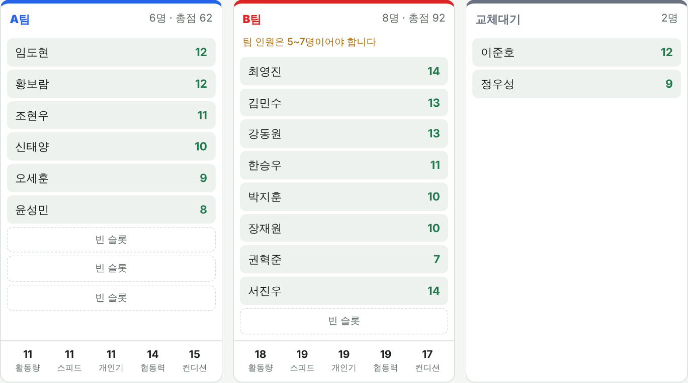
옮긴 결과 팀 인원이 5명보다 적거나 7명보다 많아지면 카드에 "팀 인원은 5~7명이어야 합니다" 경고가 나타납니다. 경고가 있어도 계속 옮길 수는 있지만, 이 상태로는 팀을 확정할 수 없습니다.
10팀 확정과 수정
10-1. 팀 확정
- 편성이 마음에 들면 팀 확정을 누릅니다 (Ctrl+S).
futsal_teams_2026-10-11.json처럼 경기일이 붙은 편성표 파일이 다운로드 폴더에 저장됩니다.- 화면에 "확정된 편성입니다 (확정 시각)"이 표시되고 편집이 잠깁니다.
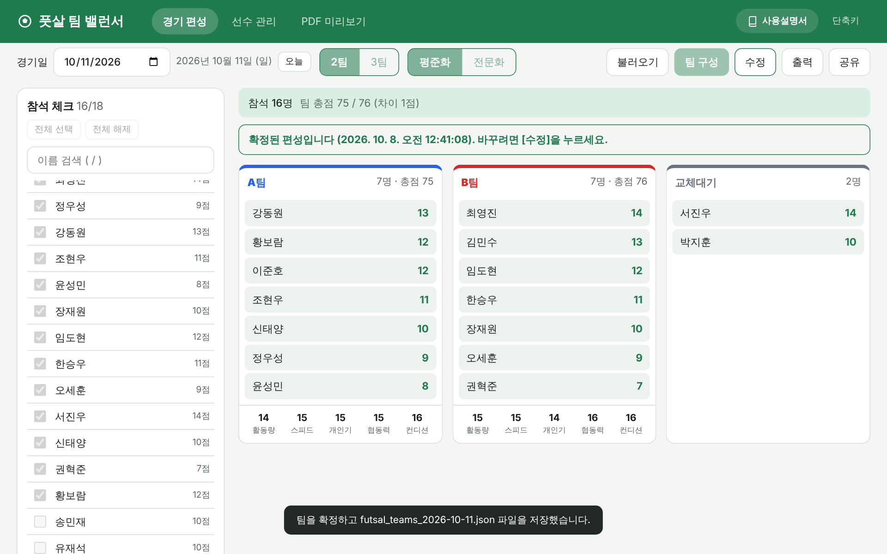
확정하면 다음이 바뀝니다.
- 참석 체크, 팀 수, 편성 방식, 드래그가 잠깁니다.
- 빈 슬롯이 숨겨지고, 교체대기가 없으면 교체대기 카드도 숨겨집니다.
- 팀 확정 자리에 수정이 나타나고, 출력과 공유를 누를 수 있게 됩니다.
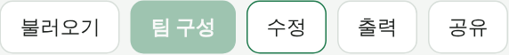
10-2. 확정할 수 없을 때
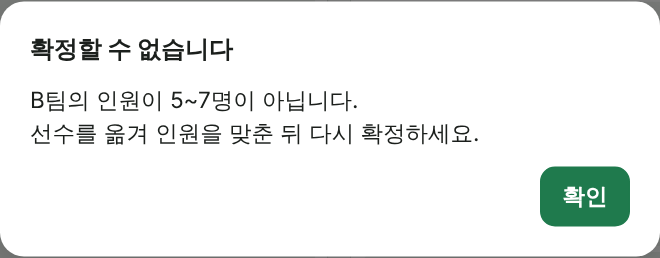
인원이 5~7명이 아닌 팀이 있으면 "확정할 수 없습니다" 창에 문제가 있는 팀 이름이 표시됩니다. 확인을 누르고 선수를 옮겨 인원을 맞춘 뒤 다시 확정하세요.
10-3. 수정 (확정 풀기)
확정한 뒤 바꿀 것이 생기면 수정을 누릅니다. 잠금이 풀려 다시 참석 체크, 드래그, 다시 구성을 할 수 있고, 출력과 공유는 다시 흐려집니다. 고친 뒤 팀 확정을 다시 누르면 새 편성표 파일이 저장됩니다.
futsal_teams_2026-10-11 (1).json처럼 번호를 붙여 저장합니다. 가장 나중에 받은 파일이 최신 편성입니다.11불러오기
저장해 둔 편성표 파일(futsal_teams_날짜.json)을 다시 여는 기능입니다. 지난 경기 편성을 다시 보거나, 다른 PC에서 만든 편성을 이어서 쓸 때 사용합니다.
- 경기 편성 탭에서 불러오기를 누릅니다 (Ctrl+O).
- 파일 선택 창에서 편성표 파일을 고르고 열기를 누릅니다.
- 파일에 저장된 경기일로 이동하고, 편성이 그대로 표시됩니다. 확정된 파일이면 확정 상태로 열립니다.
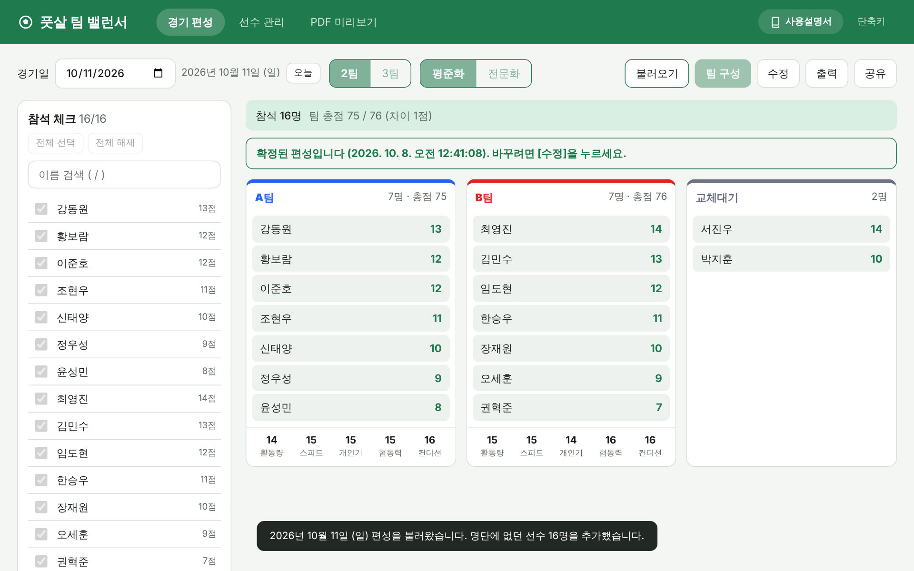
- 명단에 없는 선수가 파일에 있으면, 파일에 저장된 능력치로 명단에 자동 추가하고 "명단에 없던 선수 n명을 추가했습니다"라고 알려 줍니다.
- 불러온 날짜에 이미 편성이 있었다면 파일 내용으로 바뀝니다.
- 불러온 편성도 수정을 눌러 다시 편집하고 확정할 수 있습니다.
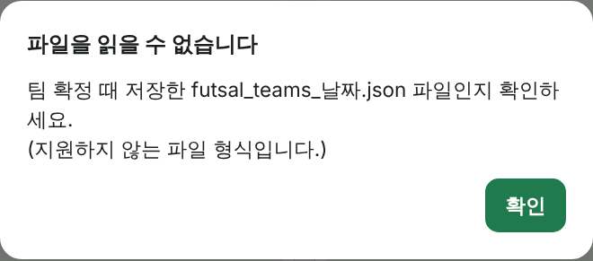
편성표 파일이 아니거나 내용이 손상된 파일을 고르면 "파일을 읽을 수 없습니다" 창이 나오고, 지금 화면은 바뀌지 않습니다.
12PDF 출력
확정한 편성표를 A4 PDF 파일로 만듭니다. 팀을 확정해야 쓸 수 있습니다.
- 팀을 확정한 뒤 출력을 누릅니다 (Ctrl+P).
futsal_teams_날짜.pdf파일이 다운로드 폴더에 저장됩니다.- 파일을 열어 인쇄하거나, 단체 대화방에 파일로 보냅니다.
PDF에는 제목, 경기일(요일), 편성 방식, 팀별 표(선수 이름, 5개 능력치, 합계, 팀 합계), 교체대기 명단이 들어갑니다. 팀이 많아 한 쪽에 들어가지 않으면 다음 쪽으로 넘어가고 쪽 번호가 붙습니다.
12-1. PDF 미리보기
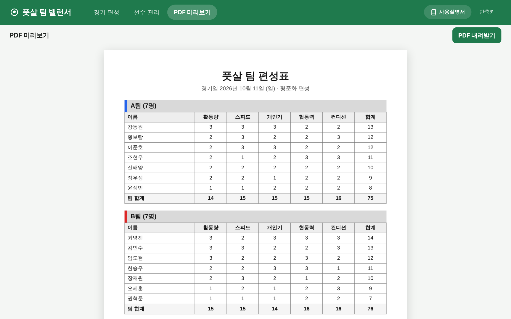
PDF 미리보기 탭(Alt+3)에서 PDF와 똑같은 내용을 화면으로 볼 수 있습니다. 여기서도 PDF 내려받기로 파일을 받을 수 있습니다. 확정 전에는 안내 문구만 표시됩니다.
13공유 이미지 (카카오톡)
팀별 선수 이름만 담은 이미지를 만들어 카카오톡 같은 메신저에 바로 붙여 넣을 수 있습니다. 이미지에는 능력치와 점수가 들어가지 않으므로 선수들에게 그대로 보여 줘도 됩니다.
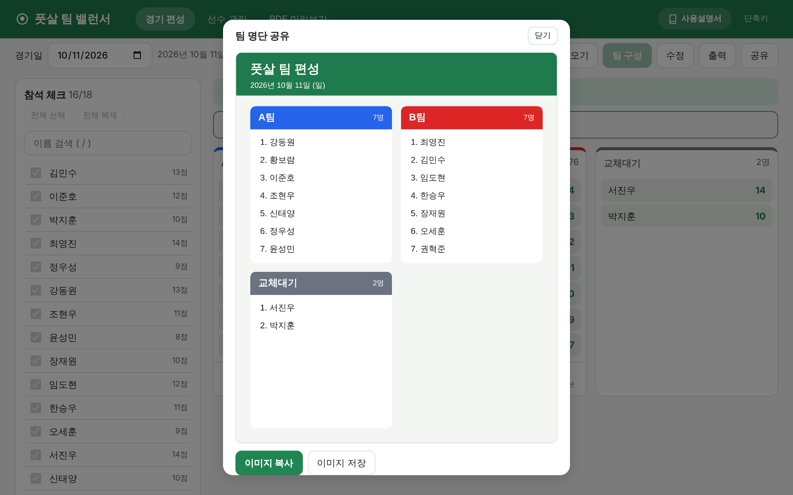
- 팀을 확정한 뒤 공유를 누릅니다.
- 공유 창에 날짜, 팀 이름(팀 색), 번호와 선수 이름, 교체대기가 담긴 이미지가 나타납니다.
- 이미지 복사를 누르면 "복사했습니다" 안내가 나옵니다.
- 카카오톡 PC 대화창을 열고 Ctrl+V로 붙여 넣은 뒤 전송합니다.
- 이미지 저장을 누르면
futsal_teams_날짜.png파일로 저장됩니다. 복사가 안 되는 환경이거나 파일로 보내고 싶을 때 쓰세요. - 창은 닫기, Esc, 또는 창 바깥을 눌러 닫습니다.
14키보드 단축키
화면 오른쪽 위 단축키를 누르거나 ?를 누르면 프로그램 안에서도 이 목록을 볼 수 있습니다.
| 키 | 동작 | 비고 |
|---|---|---|
| F1 | 사용자 설명서 열기 (새 탭) | 어디서나 |
| Alt+1 / 2 / 3 | 경기 편성 / 선수 관리 / PDF 미리보기 탭 | 어디서나 |
| Ctrl+Enter | 팀 구성 / 다시 구성 | 경기 편성 탭으로 이동 후 실행 |
| Ctrl+S | 팀 확정 (편성표 파일 저장) | 팀 구성 후 |
| Ctrl+O | 불러오기 | |
| Ctrl+P | PDF 출력 | 확정 후. 브라우저 인쇄 대신 PDF를 저장 |
| [ / ] | 경기일 하루 전 / 하루 뒤 | 경기 편성 탭, 입력 칸 밖에서 |
| / | 이름 검색 칸으로 이동 | 입력 칸 밖에서 |
| Enter | 선수 추가, 이름 수정 저장 | 입력 칸에서 |
| Esc | 창 닫기, 이름 수정 취소 | |
| ? | 단축키 도움말 | 입력 칸 밖에서 |
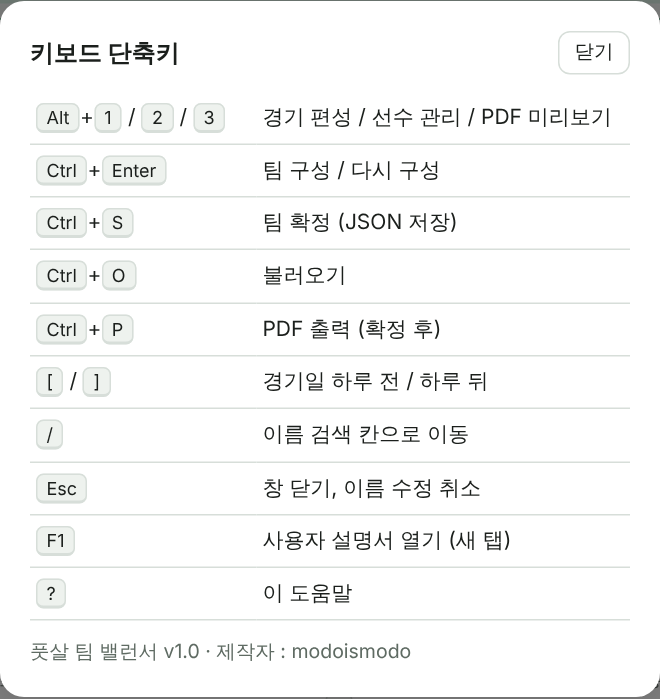
15데이터 보관과 백업
15-1. 무엇이 어디에 저장되나
| 데이터 | 저장 위치 | 저장 시점 |
|---|---|---|
| 선수 명단, 능력치 | 브라우저 저장소 | 바꿀 때마다 자동 |
| 날짜별 참석, 편성, 확정 상태 | 브라우저 저장소 | 바꿀 때마다 자동 |
확정 편성표 futsal_teams_날짜.json | PC 다운로드 폴더 | [팀 확정]을 누를 때 |
| 편성표 PDF / 공유 이미지 | PC 다운로드 폴더 | [출력] / [이미지 저장]을 누를 때 |
명단 백업 futsal_players_날짜.json | PC 다운로드 폴더 | [명단 내보내기]를 누를 때 |
15-2. 꼭 알아 둘 점
- Chrome에서 입력한 명단은 Edge에서 보이지 않습니다. 한 가지 브라우저를 정해서 쓰세요.
- 브라우저의 인터넷 사용 기록 삭제에서 "쿠키 및 기타 사이트 데이터"를 지우면 명단과 편성이 모두 지워집니다.
- 시크릿 창(InPrivate 창)에서 열면 창을 닫을 때 데이터가 사라집니다.
- 저장소를 쓸 수 없는 환경에서는 화면 위에 주황색 경고 띠가 나타납니다. 이때는 새로고침하면 데이터가 사라지므로 파일로 저장해 두세요.
15-3. 권장 백업 방법
- 선수를 많이 등록하거나 능력치를 크게 바꾼 날에는 명단 내보내기를 누릅니다.
- 다운로드 폴더에 생긴
futsal_players_날짜.json과futsal_teams_날짜.json파일을C:\futsal\백업처럼 한 폴더에 모아 둡니다. USB나 클라우드 드라이브에 함께 두면 더 안전합니다. - 명단이 사라졌다면 명단 가져오기로 가장 최근 백업 파일을 불러옵니다.
15-4. 다른 PC로 옮기기
- 지금 PC에서 명단 내보내기로 명단 파일을 만듭니다.
footsalteam_web폴더(또는 zip 파일)와 명단 파일, 필요한 편성표 파일을 새 PC로 복사합니다.- 새 PC에서
index.html을 열고 선수 관리 → 명단 가져오기로 명단을 불러옵니다. - 지난 편성이 필요하면 불러오기로 편성표 파일을 엽니다.
16자주 묻는 질문
Q. index.html을 더블클릭했는데 글자만 잔뜩 나오거나 메모장이 열려요.
A. 다른 프로그램과 연결되어 있는 것입니다. 마우스 오른쪽 버튼 → 연결 프로그램 → Chrome 또는 Edge를 고르세요. 화면 모양이 깨져 보이면 css, js 폴더가 index.html과 같은 위치에 있는지 확인하세요.
Q. 어제 입력한 선수 명단이 안 보여요.
A. 다음을 확인하세요. ① 전과 같은 브라우저(Chrome/Edge)로 열었는지 ② 시크릿 창이 아닌지 ③ 브라우저 기록을 지우지 않았는지. 그래도 없으면 명단 가져오기로 백업 파일을 불러오거나, 최근 편성표 파일을 불러오기 하면 그 편성에 있던 선수가 명단에 추가됩니다.
Q. [팀 구성] 버튼이 흐려서 눌리지 않아요.
A. 참석 인원이 모자랍니다. 2팀은 10명, 3팀은 15명 이상 체크해야 합니다. 상태 안내의 빨간 문구를 확인하세요. 확정된 상태라면 먼저 수정을 눌러야 합니다.
Q. [출력]과 [공유] 버튼이 흐려요.
A. 팀을 확정한 뒤에 쓸 수 있습니다. 팀 확정을 먼저 누르세요.
Q. 팀을 구성했는데 갑자기 사라졌어요.
A. 참석 체크를 바꾸거나, 팀 수를 바꾸거나, 참석 중인 선수를 삭제하면 팀 카드가 지워집니다. 팀 구성을 다시 누르세요.
Q. 평준화로 했는데 팀 총점 차이가 커요.
A. 팀 인원이 다르면(예: 6명과 5명) 1인당 평균으로 맞추므로 인원이 많은 팀의 총점이 높은 것이 정상입니다. 인원이 같은데도 차이가 크다면 선수들의 점수 차이가 큰 경우이니 다시 구성을 몇 번 눌러 보거나 직접 선수를 맞바꿔 보세요.
Q. 이미지 복사가 안 돼요 / 카카오톡에 붙여 넣어지지 않아요.
A. 브라우저가 클립보드 접근을 막고 있을 수 있습니다. Chrome이나 Edge 최신 버전을 쓰고, 그래도 안 되면 이미지 저장으로 PNG 파일을 받아 카카오톡에 파일로 보내세요.
Q. 저장한 파일은 어디에 있나요?
A. 브라우저의 다운로드 폴더(보통 C:\Users\사용자이름\Downloads)에 저장됩니다. 브라우저에서 Ctrl+J를 누르면 다운로드 목록을 볼 수 있습니다.
Q. Ctrl+S, Ctrl+P를 눌렀는데 브라우저 저장/인쇄 창이 아니라 다른 동작을 해요.
A. 이 프로그램에서는 Ctrl+S가 팀 확정, Ctrl+P가 PDF 출력으로 바뀌어 있습니다. 정상 동작입니다.
Q. 날짜 칸이 10/11/2026처럼 영어식으로 보여요.
A. 브라우저 언어 설정에 따라 표시 형식이 달라집니다. 날짜 칸 옆의 "2026년 10월 11일 (일)" 표시가 실제 선택된 날짜입니다.
Q. 휴대폰에서도 쓸 수 있나요?
A. 이 버전은 PC용입니다. 휴대폰에서는 파일을 열기 어렵고 끌어서 옮기기(드래그)가 동작하지 않습니다. 결과는 PDF나 공유 이미지로 휴대폰에 보내 보세요.
Q. 이전 Flutter 웹 버전에서 저장한 편성표도 열리나요?
A. 네. 파일 형식이 같아서 불러오기로 열 수 있고, 반대로 이 버전에서 저장한 파일도 Flutter 버전에서 열 수 있습니다.
Q. 인터넷이 꼭 있어야 하나요? 내 정보가 어딘가로 전송되나요?
A. 인터넷이 필요 없고, 어떤 정보도 외부로 전송하지 않습니다. 모든 데이터는 이 PC의 브라우저와 다운로드 폴더에만 저장됩니다.
17부록
17-1. 프로그램 파일 목록
| 파일 | 내용 |
|---|---|
index.html | 프로그램 시작 파일 (더블클릭해서 실행) |
manual.html | 이 사용자 설명서 (화면용) |
manual/futsal_user_manual.pdf | 이 사용자 설명서 (PDF, 인쇄용) |
manual/img/ | 설명서에 들어간 화면 사진 |
css/style.css | 화면 디자인 |
js/core.js | 팀 나누기 규칙과 계산 |
js/output.js | PDF와 공유 이미지 만들기 |
js/app.js | 화면 동작, 저장, 단축키 |
README.md | 관리자용 간단 안내 |
17-2. 저장 파일 이름 규칙
| 파일 이름 | 만드는 곳 |
|---|---|
futsal_teams_YYYY-MM-DD.json | [팀 확정] — 편성표 (불러오기 가능) |
futsal_teams_YYYY-MM-DD.pdf | [출력] — A4 편성표 |
futsal_teams_YYYY-MM-DD.png | [공유] → [이미지 저장] — 팀 명단 이미지 |
futsal_players_YYYY-MM-DD.json | [명단 내보내기] — 선수 명단 백업 |
YYYY-MM-DD는 날짜입니다. 편성표 파일은 경기일, 명단 파일은 내보낸 날입니다.
17-3. 편성 규칙 요약
| 항목 | 규칙 |
|---|---|
| 능력치 | 활동량, 스피드, 개인기, 협동력, 컨디션 · 각 1~3 · 새 선수는 모두 2 |
| 선수 점수 | 5개 능력치의 합 (5~15점) |
| 팀 수 | 2팀 또는 3팀 (A팀, B팀, C팀) |
| 팀 인원 | 5~7명, 팀끼리 최대 1명 차이 |
| 최소 인원 | 2팀 10명, 3팀 15명 |
| 교체대기 | 팀 수 × 7명을 넘는 인원, 무작위 선정 |
| 빈 슬롯 | 팀마다 처음 2개 (팀 정원 = 처음 인원 + 2) |
| 평준화 | 점수순 지그재그 배정 후 맞바꾸기로 팀 1인당 평균 총점과 항목별 평균 차이를 최소화 |
| 전문화 | 점수 높은 순으로 A팀부터 채움 |
| 확정 조건 | 모든 팀이 5~7명 |
17-4. 제작자와 버전 정보
| 제작자 | modoismodo |
|---|
| 버전 | 날짜 | 내용 |
|---|---|---|
| 1.0 (최종본) | 2026-10-07 | 로컬 PC 버전 첫 배포. HTML/JS로 제작, 서버·DB 없이 실행 |
풋살 팀 밸런서 사용자 설명서 · 버전 1.0 · 제작자 : modoismodo